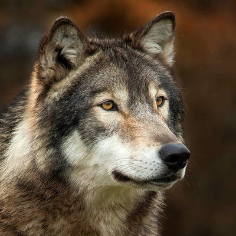
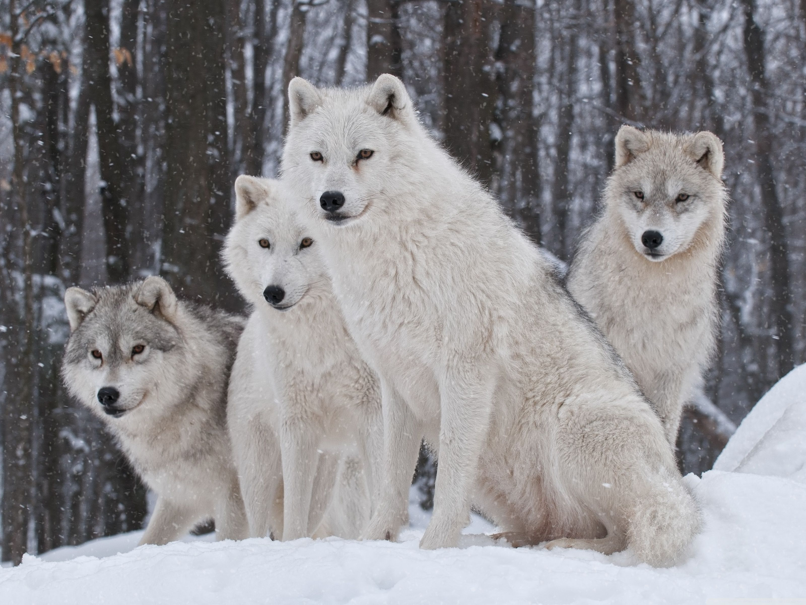
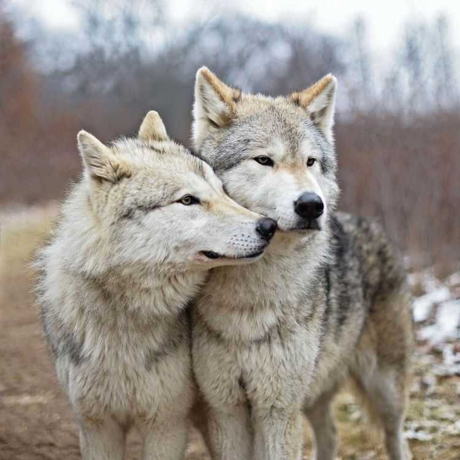

Wolves are complex, highly intelligent animals who are caring, playful, and above all devoted to family.
Only a few other species exhibit these traits so clearly.
Just like elephants, gorillas and dolphins, wolves educate their young, take care of their injured and live in family groups.
Keen senses, large canine teeth, powerful jaws, and the ability to pursue prey at 60 km (37 miles) per hour.
A typical northern male may be about 2 metres (6.6 feet) long, including the bushy half-metre-long tail.

A wolf pack is an exceedingly complex social unit—an extended family of parents, offspring, siblings, aunts, uncles, and sometimes dispersers from other packs.
There are old wolves that need to be cared for, pups that need to be educated, and young adults that are beginning to assert themselves – all altering the dynamics of the pack.
The job of maintaining order and cohesion falls largely to the alphas, also known as the breeding pair.
Typically, there is only one breeding pair in a pack. They, especially the alpha female (the mother of the pack), are the glue keeping the pack together.
The loss of a parent can have a devastating impact on social group cohesion. In small packs, human-caused mortality of the alpha female or of both breeders can cause the entire pack to dissolve.
After the alphas, wolves second in command are called the betas, followed by mid-ranking wolves, and finally the omegas.
Both mid- and low-ranking positions are somewhat fluid. Although an omega may hold that position for many years, it is not unheard of for the pack to pick a new omega and let the other retire.

Living in a pack not only facilitates the raising and feeding of pups, coordinated and collaborative hunting, and the defense of territory,
it also allows for the formation of many unique emotional bonds between pack members, the foundation for cooperative living.
Wolves care for each other as individuals. They form friendships and nurture their own sick and injured.
Pack structure enables communication, the education of the young and the transfer of knowledge across generations.
Wolves and other highly social animals have and pass on what can be best described as culture.
A family group can persevere for several generations, even decades, carrying knowledge and information through the years, from a generation to another.
Wolves play together into old age, they raise their young as a group, and they care for injured companions. When they lose a pack mate, there is evidence that they suffer and mourn that loss.
When we look at wolves, we are looking at tribes—extended families, each with its own homeland, history, knowledge, and indeed, culture.
Wolves communicate, collaborate and share knowledge across generations. The older wolves, as more experienced hunters, share hunting strategies and techniques with younger wolves, passing down knowledge from one generation to the next, maintaining a culture unique to that pack.
